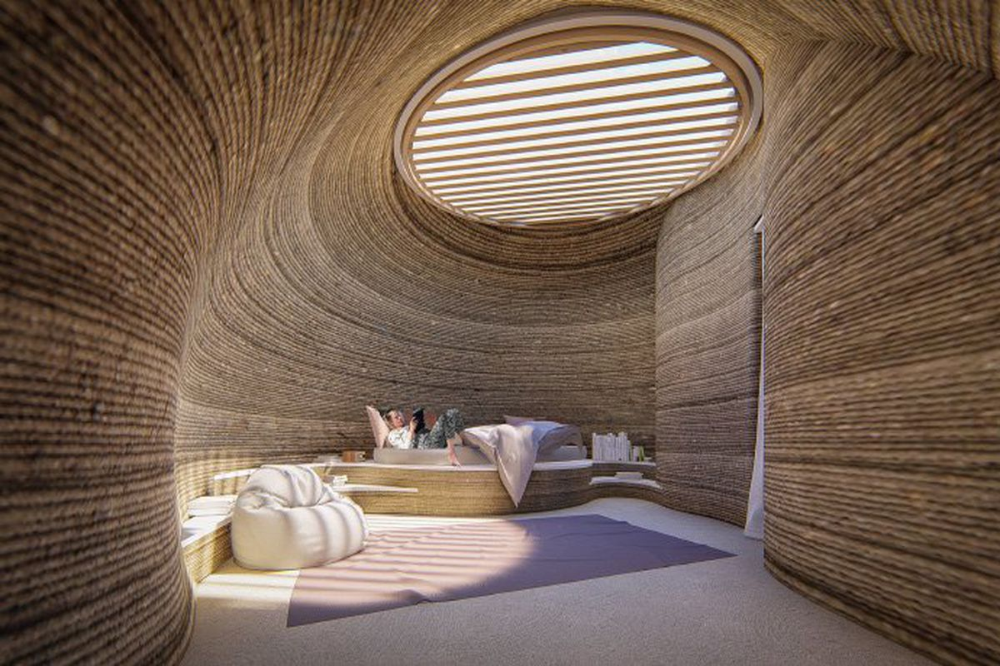

3D printing is already here

This year’s South by Southwest (SXSW) festival saw its usual lineup of bands and films, but another more pressing topic was on the table. "It’s existentially urgent that we find new ways to shelter ourselves," says Jason Ballard, cofounder and CEO of Icon, an Austin-based construction start-up. "The homes and buildings of our future have to be profoundly different than they are today." For Icon and other disruptors in the construction industry, the solution isn’t about optimizing human labor or materials, but rather, building with robots.
Ballard and his company are imagining a future where all our housing needs are 3D printed using advanced tech. "It’s time for the built environment to join the digital automated robotic revolution that has brought so much good to other industries," Ballard says.
Four years ago, Icon unveiled the world’s first permitted 3D-printed home at SXSW. That house was designed as a prototype affordable housing unit, and it was later translated into several tiny home villages that the company has helped to build. This year, Icon presented their latest achievement, House Zero.
Designed by Lake Flato Architects in the likeness of a ranch-style residence, the model home is arguably the most advanced formal expression of 3D-printed residential design to date. Its undulating, textural printed concrete walls are interspersed with windows that stretch from floor to ceiling, where a flat traditional timber roof caps it off. "It’s important to do deliberately provocative houses like House Zero," says Ballard. "It’s about shifting people’s imaginative window about what modern housing can be."
While it’s good to invite people to dream, what about 3D-printing’s promise to actually create and provide shelter? Is this something people want or need? And what kind of shelter is it, exactly?
For a select group of global citizens who’ve found themselves living in a 3D-printed homes, while the reality may not be quite as glamorous as House Zero, it’s nevertheless been surprisingly comfortable.